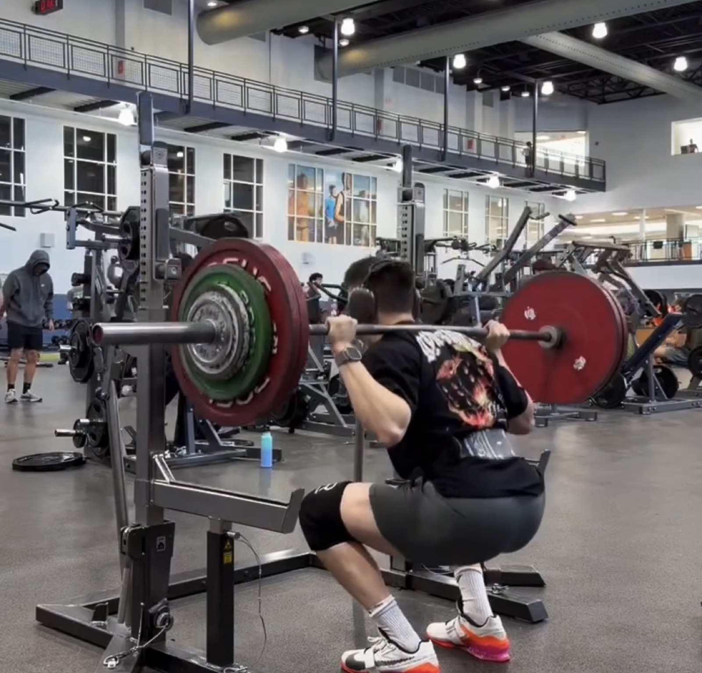
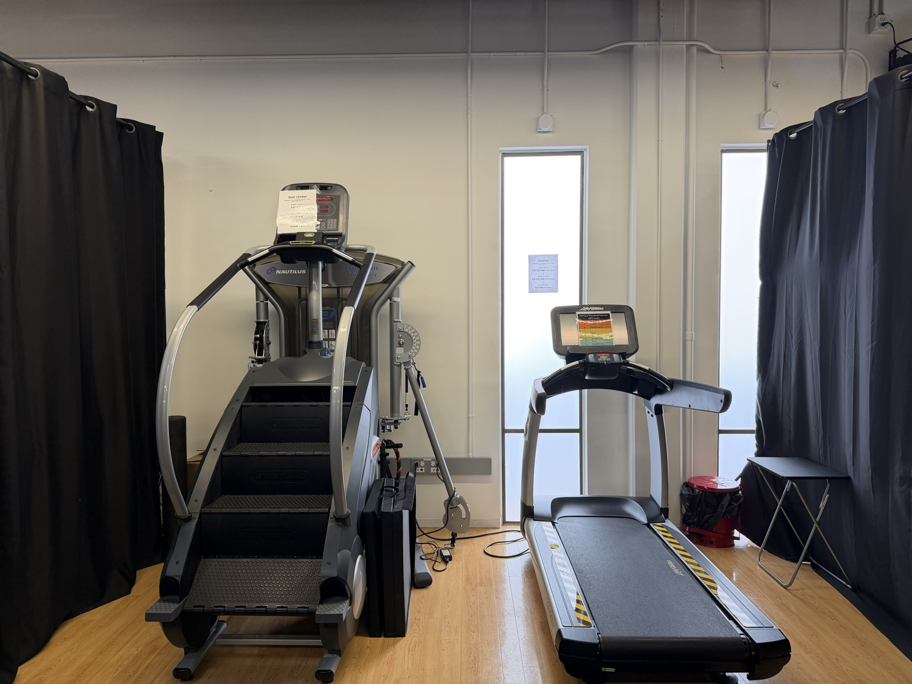
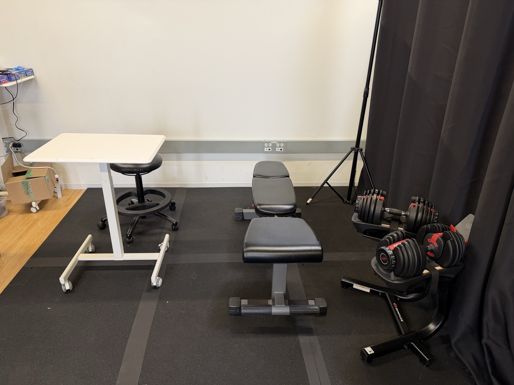
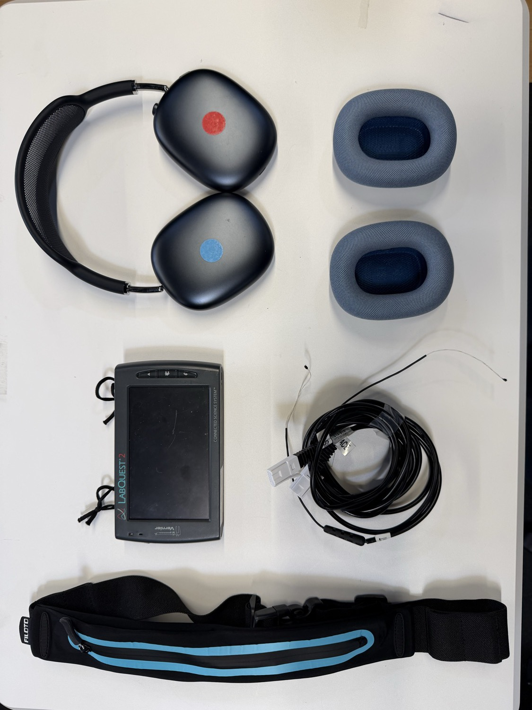
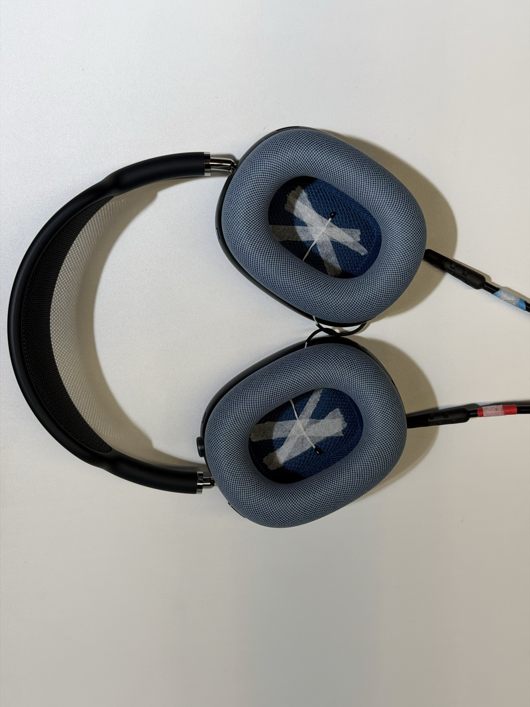

This case study is access-restricted.
Enter the 6-digit passcode to view.
Human Physiology · Internship 2026
A study measuring the thermal comfort, sweat, and fit of over-ear AirPods Max across a full exercise session — pairing continuous ear-cup temperature with participants' own subjective ratings.
This one is personal. I've used AirPods Max for years and love them everywhere — except the gym. They heat up, get sweaty, and slip off when I lift. That everyday frustration is exactly what I turned into this study.

Background
Research Questions & Hypotheses
One structured session per participant; cardio & weight-lifting order is counter-balanced. Hover a phase for detail.
Protocol
Participants
Data Collected
Hardware
Exercise gear
Capture
How a session is run — a screened-off room, standardized equipment, and AirPods Max instrumented with thermocouples.

Stair climberTreadmillBlackout curtains
Logging deskAdjustable benchDumbbells
Waist beltLabQuest 2 loggerThermocouple leadsAirPods Max
ThermocoupleThermocoupleEvery step — running the session, cleaning messy sensor logs, visualizing the survey — is a small, offline, local-first tool. Click any card to open it live.
Numbers that came out of the data so far — measured or observed across the sessions (N = 14).
Who we tested — sample so far (N = 14)
Ear-cup temperature (°F): Room BL is ambient (device off); PT BL & Recovery are the value at the end of each 3-min seated hold; Cardio & Weight-lifting are the block peak.
| Participant | Room BL | PT BL | Cardio | Weight-lifting | Recovery |
|---|---|---|---|---|---|
| MD105366 | 71 | 78 | 84 | 83 | 88 |
| MD112502 | 73 | 80 | 86 | 88 | 88 |
| MD146757 | 73 | 79 | 84 | 83 | 85 |
| MD160880 | 73 | 84 | 91 | 90 | 93 |
| MD121815 | 73 | 79 | 87 | 81 | 84 |
| MD153340 | 74 | 80 | 87 | 84 | 89 |
| MD767528 | 74 | 81 | 86 | 89 | 89 |
| MD179539 | 72 | 80 | 89 | 86 | 92 |
| MD736460 | 73 | 80 | 86 | 87 | 86 |
| MD183417 | 71 | 79 | 85 | 82 | 88 |
| MD131671 | 74 | 82 | 89 | 90 | 90 |
| MD136409 | 73 | 81 | 92 | 91 | 90 |
| MD212786 | 73 | 86 | 92 | 90 | 90 |
| MD966187 | 74 | 81 | 88 | 85 | 86 |
The biggest jump is donning: room ~73°F → worn ~78–84°F within the first 3 minutes (+5 to +11°F). Exercise then adds only a few more degrees; cardio vs. weights barely differs.
While worn, the cup doesn't cool — recovery ≈ peak. It only drops sharply when the device comes off.
It heats fast and stays hot · people reject the trapped sweat more than the degrees · and the fit won't stay put. Pilot data, N = 14.
Put them on and the ear-cup jumps +6°F in the first ~6 min — the biggest single jump — then keeps climbing through both exercise blocks to a ~89°F peak late in the session (~55 min), and stays in the high-80s until it comes off. 13 of 14 ran hotter in their second block, so time worn, not which exercise, drives the climb; felt warmth & sweat rise right alongside it. With typical workouts running 30–90 min, a full session is spent in this high heat. That ~88°F (≈31°C) sits at the upper edge of the skin–cushion comfort zone (≈31–33°C, RH <60%), so every participant sat in a near-uncomfortable microclimate the whole time (Y. Li 2001; Fukazawa & Havenith 2009).
Cohort mean ear-cup temperature by phase (N = 14) with 95% CI bars for between-participant variability. It jumps on donning and keeps climbing through both exercise blocks to a ~89°F peak (~55 min), then eases slightly but stays in the high-80s through recovery until it comes off.
°F/min per worn phase — the climb collapses toward zero, i.e. the temperature plateaus.
Both subjective sliders (0–10) climb across phases — sweat rises fastest.
Each dot is one participant-phase — perceived sweat rises right along with the measured ear-cup temperature (r ≈ .65). What people feel matches the sensor.
Prior work That ~88°F (≈31°C) sits at the upper edge of the skin–cushion “microclimate” comfort zone (≈31–33°C, RH <60%), where discomfort is driven more by trapped moisture / skin wettedness than by temperature itself — and the head is among the body’s most heat-sensitive regions. Y. Li, The Science of Clothing Comfort, Textile Progress (2001); Gagge, Stolwijk & Hardy (1967); Fukazawa & Havenith, Eur J Appl Physiol (2009); Arens, Zhang & Huizenga, J Therm Biol (2006).
Every participant quote from the sessions — grouped by theme. The pattern is consistent: heat & trapped sweat, whether they’d accept it for workouts, and the fit slipping under movement.
Heat & sweat
Acceptance
Fit & stability
People feel the trapped sweat more than the degrees — perceived sweat tracked measured temperature (r ≈ .65) more closely than warmth did (~.39). 9 of 14 wouldn’t reuse them for workouts — and rejection concentrates in frequent trainers (5 of the 6 who train ≥5×/week said no). Prior AirPods Max use didn't help — a regular user rejected it too.
Rejection concentrates in frequent trainers — 5 of the 6 who train ≥5×/week wouldn’t reuse them; acceptance is mostly among less-frequent trainers. Prior AirPods Max use didn’t protect (a regular user rejected them too).
Steady wear is comfortable — the failure is stability: 8 of 14 had it fall off (6 on the bench press, 2 on a shoulder press) and 9 of 14 hit moderate-or-severe instability while lifting, as the band slides back and down (a sagittal-plane slip) off the head. Proctor re-adjustments landed almost entirely in the lifting block. Pressure and material comfort stayed fine — a stability problem, not a comfort one.
Re-adjustments land almost entirely in weight-lifting — proctor notes pin every fall to the bench press (cardio’s few were mostly sensor re-seats). They were independent of mechanical discomfort: pressure comfort stayed “acceptable” whether a participant was adjusted 0 or 17 times.
Bar length = proctor-logged re-adjustments across all exercise (warm-up + cardio + weight-lifting; Tagger — the source of truth); bar colour = the participant’s peak felt instability. Objective and subjective broadly track.
Each participant’s worst rating across the session, on the No→Slight→Moderate→Severe scale (ASK survey). Instability is the real failure — 9 of 14 peaked at moderate-or-severe — while mechanical and material discomfort stayed at none/slight for everyone.
Prior work Headphone comfort has mostly been studied as clamping pressure & cushioning (Sapiejewski 1990), and head-worn fit depends on head/face form (Bredenkamp 2024); helmet studies show fit quality governs stability & retention under movement (Yu et al. 2018). Over-ear headphone retention during exercise is largely unstudied — the gap this pilot addresses. Sapiejewski, J. Acoust. Soc. Am. (1990); Bredenkamp, in Product Fit & Sizing (2024); Yu et al., J. Biomech. Eng. (2018).
An ongoing pilot — N = 14 of a target N = 20. What limits today's read, where we go next, and the design direction it points to.
Limitations
Weights capped at ~20 lb / RPE ≤ 6 — so the heat & slip here are a lower bound.
N = 14, directional only — and sessions ran ~60 min with temperature still rising at the end, so the true plateau isn't captured.
We log only the ear-cup air temperature — no humidity or skin-contact temp.
A single AirPods Max, one cushion colour, in a fixed indoor lab (no sunlight).
Next steps
Push past 20 lb toward the RPE cap — see if heat & slip scale with effort.
Reach N = 20 and run longer sessions to capture the true plateau / ceiling.
Log humidity and skin-contact temp to find the real driver of discomfort.
Try other cushion colours and run sessions outdoors in sunlight.
Future direction
Mesh vents + moisture-wicking, quick-dry fabric + cooling-gel / phase-change padding & washable covers pull trapped heat & sweat out — with a higher-grip, supine-stable seal so it stays put through bench lying↔upright transitions.
Same cushion, re-imagined — cooling-gel contact, perforated mesh ring, ventilation channels & a grippy sport seal. Drag to cross-fade from today’s knit.
Tap each upgrade to see what it does
A glowing marker tracks today's position across the project.
Confirm direction; literature & competitor review; define questions.
Study protocol; session checklist; recruit participants; build tools.
Run pilot sessions; align & clean data; cross-link subjective vs. measured.
Final technical report, polished demo & presentation.